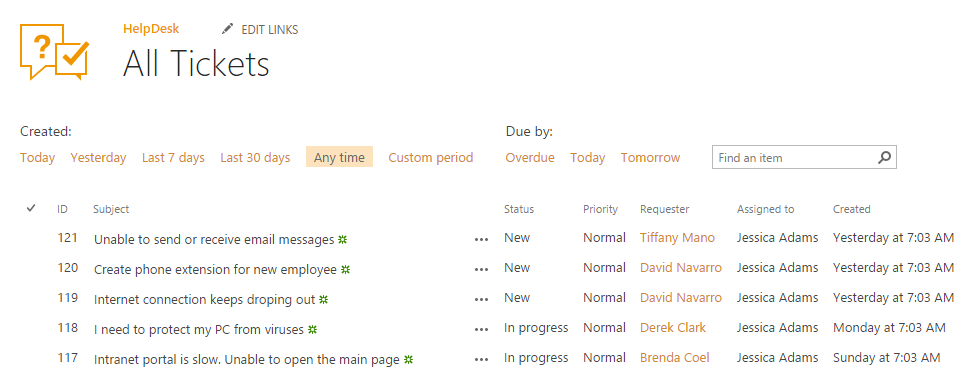
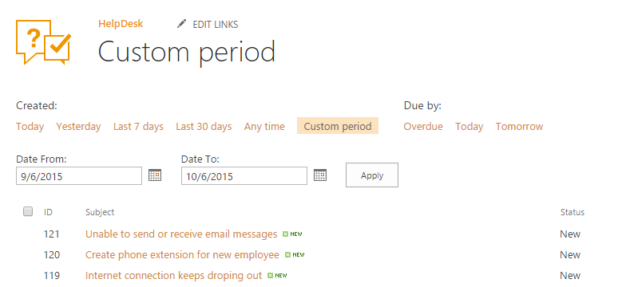

All tickets¶
All tickets is a module where you can view a list of all tickets and filter them by creation date or by due date. Navigate to all tickets using the icon in the navigation panel on the right-hand side:
Here you can see list of all tickets and filter them. The filters are positioned at the top of the view:

On the custom period page you can specify a period of dates for filtering by creation date:

If you don’t specify “From” or “To” inputs, default values will be used: 01/01/1970 for “From” and 5 years from now for “To”.